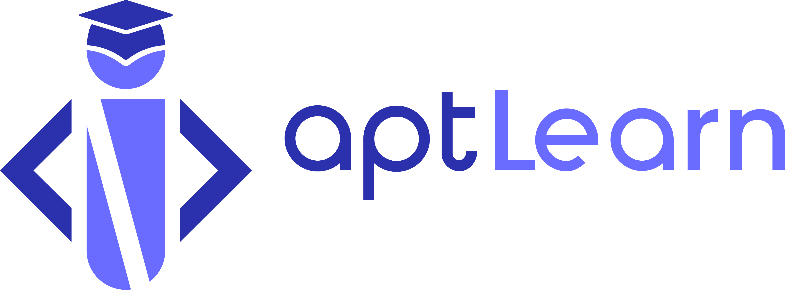
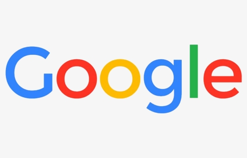
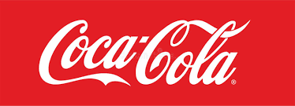

sponsors



The NTS brings together the community of expert , academics, and activist who comprise the creative commons affiliate network in a different country every two years This year, we hope to expand our invitation list including organisation and individuals who want to work with us on shared projects that advance the cause of the commons, free culture and open knowledge so if you're active and engaged in the worlds of open content and knowledge -free software advocates, wikipedians open knowledge, gallaries, libraries, museum, archives, government and foundations, lawyers and activist-we hope you'll consider joining us this year to build stronger , more vibrant commons together
please contact us per email for any further questions about national tech submit 2022
NTS2022@Gmail.comthe logo of the annual national tech summit 2022 was decided through the logo competition from 15 sep to 15 oct.
the logo of the annual national tech summit 2022 was decided through the logo competition from 15 sep to 15 oct.After online public voting and selection committees's judging process ,the logo from stanley okoro won the prize. After consultation with Mr stanley we optimized the price-winning -logo for this year NTS2022 as following:
take a look at the last two NT summit which took place in calabar and Abuja
annual national tech summit 2018 in calabar
annual national tech summit 2020 in calabar